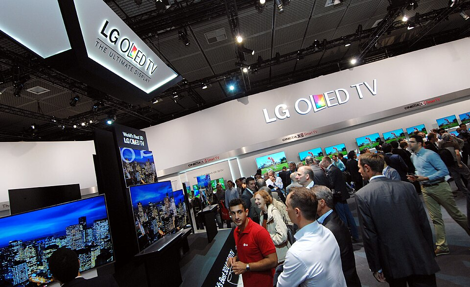

설립연도
2002년

냉장고·세탁기 같은 생활가전과 OLED TV로 잘 알려진 회사예요. 최근에는 전기차·자동차 전장 부품, 에어컨·데이터센터 냉각 장치처럼 기업을 상대로 파는 사업을 키우고 있어요. 휴대폰 사업은 2021년에 접었어요. 2025년 매출은 89조 2,009억 원으로 역대 최대였어요.
칸에 마우스를 올리거나 누르면 자세한 설명을 볼 수 있어요.
냉장고, 세탁기, 건조기, 식기세척기, 스타일러 같은 생활가전을 만들어요. 매출이 가장 큰 사업이에요.
대표 예냉장고, 세탁기, 건조기, 스타일러

OLED TV를 앞세운 TV와 모니터를 만들고, TV 운영체제 webOS로 광고·콘텐츠 수익도 내요.
대표 예OLED TV, 모니터, webOS
자동차에 들어가는 화면·통신 장치(인포테인먼트), 전기차 모터·인버터, 자회사 ZKW의 헤드램프를 만들어요.
대표 예인포테인먼트, 전기차 구동 부품, 차량 램프
가정·건물용 에어컨과 히트펌프, AI 데이터센터를 식히는 냉각 장치를 만들어요.
대표 예시스템 에어컨, 히트펌프, 칠러
| 기간 | 매출 | 영업이익 | 순이익 |
|---|
사업마다 겨루는 상대가 달라요